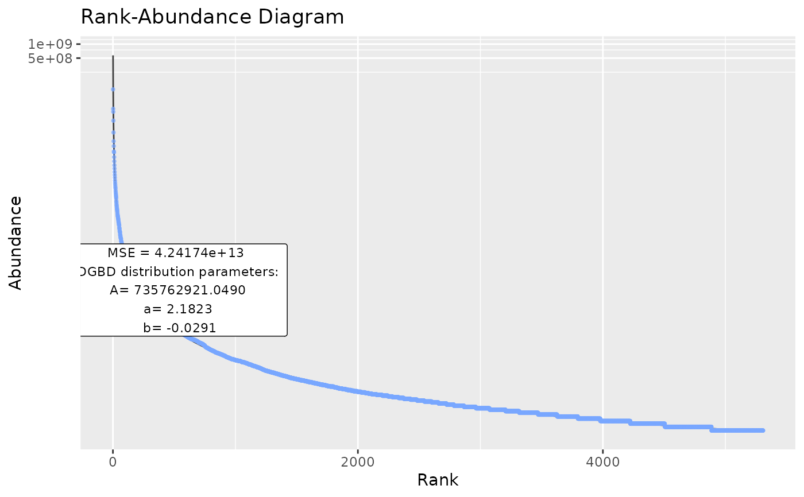
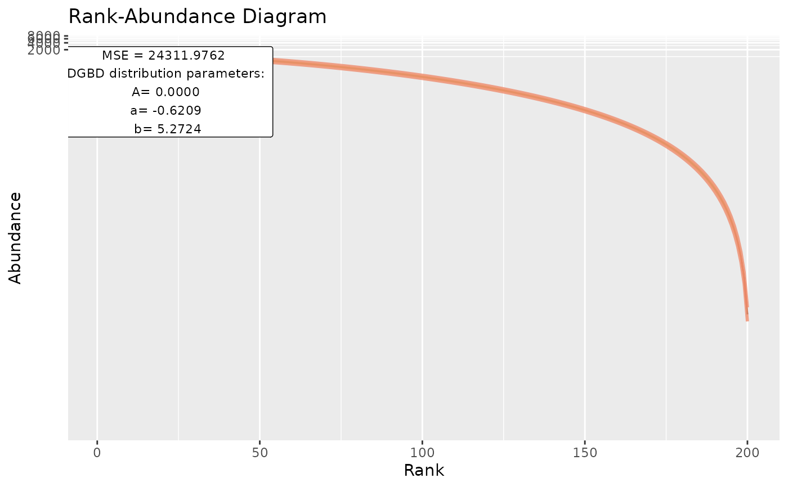
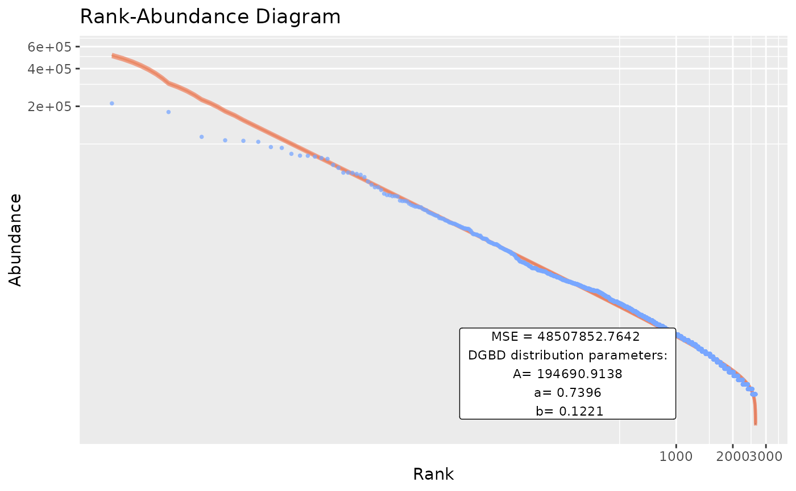

Creates a graphical representation of the DGB Distribution (Mansilla et al. (2007) doi:10.1016/j.joi.2007.01.001
) model. It supports both linear and nls fits done in BC_param. Requires a function generated by BC_model.
Usage
BC_plot(
df_abundance = NULL,
column = NULL,
BC_model_object = NULL,
obs = TRUE,
obs_shape = 16,
obs_col = "#78a7ff",
obs_size = 1,
model = TRUE,
model_col = "#000000",
model_width = 0.5,
model_extra = "MSE",
confint = TRUE,
confint_col = "#ed8666",
confint_width = 1,
confrange = TRUE,
confrange_col = "#ffd078",
gfx_alpha = 0.75,
gfx_title = "Rank-Abundance Diagram",
gfx_label = TRUE,
gfx_label_coords = NULL,
gfx_xy_trans = c("identity", "log10"),
gfx_theme = ggplot2::theme_gray(),
plot_silent = FALSE,
...
)Arguments
- df_abundance
A data frame that contains abundance data.
- column
Either a string with the name of the column or the number of the column that stores the abundances in the data frame.
- BC_model_object
Optional. A previous object generated by
BC_model.- obs
Logical. Whether to plot the observed abundance data. Defaults to true.
- obs_shape
Numerical. The shape of the plotted observed abundance data.
- obs_col
The color for the observations.
- obs_size
Numeric. The size for the observations.
- model
Logical. Whether to show the models predicted data. Defaults to true.
- model_col
Specify a color for the model.
- model_width
Numeric. Changes the width of the lines to use for the model.
- model_extra
String. Has to be one of: "MSE" (Mean Square Error),"S" (Standard error of the Estimate),"R2". Defaults to "MSE".
- confint
Logical. Whether to add the confidence interval lines. Defaults to true.
- confint_col
Specify a color for the confidence interval lines.
- confint_width
Numeric. Changes the width of the confidence interval lines.
- confrange
Logical. Whether to shade the area in the confidence interval. Defaults to true.
- confrange_col
Specify a color to use for the confidence interval shading.
- gfx_alpha
Numeric. Modifies all the graphed objects alpha. Default=0.75.
- gfx_title
String. Changes the title of the graph.
- gfx_label
Logical. Whether to show the parameters used and model_extra info.
- gfx_label_coords
A vector that provides custom x and y values to move the label.
- gfx_xy_trans
A vector with 2 strings that define the ggplot2 transformations to be applied to the x and y scales. Defaults to c("identity","log10").
- gfx_theme
Provide a ggplot2 theme function to use. Defaults to theme_gray().
- plot_silent
Logical. Whether to print to console the output list and plot the graph.
- ...
passes arguments to
BC_model.
Value
A list with the following elements: The input data frame with added processed ranking data, model data and confidence interval data, the adjusted parameters, the confidence interval of the parameters, the linear model, a summary of the model, a generated function for use with raw numeric data and a ggplot2 object that shows the DGBD distribution and observed data, a model_extra vector with 2 elements, model_extra name and value.
Examples
plotWeblinks <- BC_plot(Weblinks, column=2, rank_threshold=4,confint=FALSE,confrange=FALSE,plot_silent=TRUE)
head(plotWeblinks[[1]])
#> pre_numerator pre_denominator lwr predicted_values upr BC_rank
#> 1 5306 3 51485548 52114228 52750584 3
#> 2 5308 1 564836866 573002863 581286917 1
#> 3 5307 2 124625256 126250120 127896169 2
#> 4 5305 4 27497261 27816930 28140315 4
#> 5 5304 5 16904524 17093390 17284366 5
#> 6 5303 6 11359769 11482490 11606537 6
#> degree abundance
#> 1 0 35159835
#> 2 1 106649769
#> 3 2 40711748
#> 4 3 22648832
#> 5 4 12617832
#> 6 5 8188854
plotWeblinks[2:8]
#> [[1]]
#> A a b
#> 7.357629e+08 2.182266e+00 -2.914983e-02
#>
#> [[2]]
#> 2.5 % 97.5 %
#> (Intercept) 7.152981e+08 7.568132e+08
#> log_den 2.184312e+00 2.180219e+00
#> log_num -3.119669e-02 -2.710297e-02
#>
#> [[3]]
#>
#> Call:
#> stats::lm(formula = log_abundance ~ log_den + log_num)
#>
#> Coefficients:
#> (Intercept) log_den log_num
#> 20.41642 -2.18227 -0.02915
#>
#>
#> [[4]]
#>
#> Call:
#> stats::lm(formula = log_abundance ~ log_den + log_num)
#>
#> Residuals:
#> Min 1Q Median 3Q Max
#> -1.68134 -0.03974 -0.00297 0.03298 0.16958
#>
#> Coefficients:
#> Estimate Std. Error t value Pr(>|t|)
#> (Intercept) 20.416419 0.014389 1418.88 <2e-16 ***
#> log_den -2.182266 0.001044 -2090.10 <2e-16 ***
#> log_num -0.029150 0.001044 -27.92 <2e-16 ***
#> ---
#> Signif. codes: 0 ‘***’ 0.001 ‘**’ 0.01 ‘*’ 0.05 ‘.’ 0.1 ‘ ’ 1
#>
#> Residual standard error: 0.05765 on 5305 degrees of freedom
#> Multiple R-squared: 0.9993, Adjusted R-squared: 0.9993
#> F-statistic: 3.706e+06 on 2 and 5305 DF, p-value: < 2.2e-16
#>
#>
#> [[5]]
#> function (rank)
#> {
#> params["A"] * (max(t_frame[, "BC_rank"]) + 1 - rank)^params["b"]/(rank^params["a"])
#> }
#> <bytecode: 0x7dad1d8>
#> <environment: 0x149d36e8>
#>
#> [[6]]

#>
#> [[7]]
#> [1] "MSE" "42417404085421.2"
#>
plothmp_wgs <- BC_plot(DGBD::hmp_wgs,2,obs=FALSE,plot_silent=TRUE)
head(plothmp_wgs[[1]])
#> pre_numerator pre_denominator lwr predicted_values upr
#> 1 12 189 0.00191929 0.00255945 0.00341313
#> 2 91 110 67.60535356 79.64205011 93.82180274
#> 3 52 149 4.28061625 5.03017084 5.91097571
#> 4 126 75 296.89124035 349.15112822 410.60999372
#> 5 199 2 228.90175484 409.49230806 732.55860566
#> 6 160 41 715.69574563 845.63422804 999.16375359
#> BC_rank PID abundance
#> 1 189 M00171 8.052846e-03
#> 2 110 M00175 8.754249e+01
#> 3 149 M00174 1.134126e+01
#> 4 75 M00170 1.973639e+02
#> 5 2 M00178 1.193010e+03
#> 6 41 M00359 6.899719e+02
plothmp_wgs[2:8]
#> [[1]]
#> A a b
#> 2.018236e-10 -6.208510e-01 5.272359e+00
#>
#> [[2]]
#> 2.5 % 97.5 %
#> (Intercept) 4.591541e-11 8.871265e-10
#> log_den -4.345076e-01 -8.071944e-01
#> log_num 5.086016e+00 5.458703e+00
#>
#> [[3]]
#>
#> Call:
#> stats::lm(formula = log_abundance ~ log_den + log_num)
#>
#> Coefficients:
#> (Intercept) log_den log_num
#> -22.3236 0.6209 5.2724
#>
#>
#> [[4]]
#>
#> Call:
#> stats::lm(formula = log_abundance ~ log_den + log_num)
#>
#> Residuals:
#> Min 1Q Median 3Q Max
#> -10.8372 -0.2644 -0.0805 0.2879 2.0649
#>
#> Coefficients:
#> Estimate Std. Error t value Pr(>|t|)
#> (Intercept) -22.32363 0.75078 -29.73 < 2e-16 ***
#> log_den 0.62085 0.09449 6.57 4.37e-10 ***
#> log_num 5.27236 0.09449 55.80 < 2e-16 ***
#> ---
#> Signif. codes: 0 ‘***’ 0.001 ‘**’ 0.01 ‘*’ 0.05 ‘.’ 0.1 ‘ ’ 1
#>
#> Residual standard error: 0.9312 on 197 degrees of freedom
#> Multiple R-squared: 0.9618, Adjusted R-squared: 0.9614
#> F-statistic: 2480 on 2 and 197 DF, p-value: < 2.2e-16
#>
#>
#> [[5]]
#> function (rank)
#> {
#> params["A"] * (max(t_frame[, "BC_rank"]) + 1 - rank)^params["b"]/(rank^params["a"])
#> }
#> <bytecode: 0x7dad1d8>
#> <environment: 0x16382058>
#>
#> [[6]]

#>
#> [[7]]
#> [1] "MSE" "24311.9761699429"
#>
plotBillionaires <- BC_plot(Billionaires, column= 2, gfx_xy_trans=c("log10","log10"),plot_silent=TRUE)
head(plotBillionaires[[1]])
#> pre_numerator pre_denominator lwr predicted_values upr BC_rank rank
#> 1 2640 1 499598.6 509496.8 519591.1 1 1
#> 2 2639 2 299827.5 305121.5 310509.0 2 2
#> 3 2638 3 222405.7 226053.8 229761.6 3 3
#> 4 2637 4 179927.4 182719.2 185554.3 4 4
#> 5 2636 5 152648.8 154912.8 157210.3 5 5
#> 6 2635 6 133459.1 135363.9 137295.9 6 6
#> abundance
#> 1 211000
#> 2 180000
#> 3 114000
#> 4 107000
#> 5 106000
#> 6 104000
plotBillionaires[2:8]
#> [[1]]
#> A a b
#> 1.946909e+05 7.396223e-01 1.221052e-01
#>
#> [[2]]
#> 2.5 % 97.5 %
#> (Intercept) 1.872674e+05 2.024087e+05
#> log_den 7.427259e-01 7.365187e-01
#> log_num 1.190017e-01 1.252088e-01
#>
#> [[3]]
#>
#> Call:
#> stats::lm(formula = log_abundance ~ log_den + log_num)
#>
#> Coefficients:
#> (Intercept) log_den log_num
#> 12.1792 -0.7396 0.1221
#>
#>
#> [[4]]
#>
#> Call:
#> stats::lm(formula = log_abundance ~ log_den + log_num)
#>
#> Residuals:
#> Min 1Q Median 3Q Max
#> -0.88157 -0.03868 0.00415 0.03921 0.55573
#>
#> Coefficients:
#> Estimate Std. Error t value Pr(>|t|)
#> (Intercept) 12.179169 0.019826 614.31 <2e-16 ***
#> log_den -0.739622 0.001583 -467.30 <2e-16 ***
#> log_num 0.122105 0.001583 77.15 <2e-16 ***
#> ---
#> Signif. codes: 0 ‘***’ 0.001 ‘**’ 0.01 ‘*’ 0.05 ‘.’ 0.1 ‘ ’ 1
#>
#> Residual standard error: 0.06127 on 2637 degrees of freedom
#> Multiple R-squared: 0.9944, Adjusted R-squared: 0.9944
#> F-statistic: 2.355e+05 on 2 and 2637 DF, p-value: < 2.2e-16
#>
#>
#> [[5]]
#> function (rank)
#> {
#> params["A"] * (max(t_frame[, "BC_rank"]) + 1 - rank)^params["b"]/(rank^params["a"])
#> }
#> <bytecode: 0x7dad1d8>
#> <environment: 0x123b1a28>
#>
#> [[6]]

#>
#> [[7]]
#> [1] "MSE" "48507852.7641689"
#>